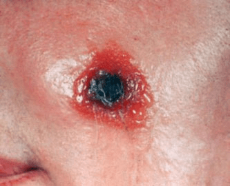
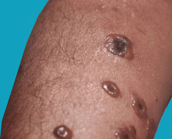

What is Anthrax?
Anthrax is a disease caused by the bacterium Bacillus anthracis, a bacterium
that has the ability to form spores; spores are cells that are essentially
dormant (asleep) but may become active under certain conditions. Anthrax
disease can take 3 forms:
- Involving the skin (cutaneous) – 20% mortality
- Involving the lungs (inhalational) – 90% mortality
- Involving the digestive system (gastrointestinal) – 100% mortality
The vast majority of cases of anthrax (95%) are cutaneous. As a naturally
occurring disease, anthrax is very rare. However, it has the potential to be
used as a weapon of bioterrorism; this occurred in 2001 with an attack on the
United States via the US Postal service. Anthrax was mixed in powder that was
put into letters and packages and sent to prominent US figures, including senators.
A number of people contracted cutaneous or inhalational anthrax from exposure
to the powder, and some people died. If there were to be future attacks on
the US using anthrax, it would probably be disseminated as an aerosol, and
the resulting cases would be inhalational anthrax.

Anthrax is a life-threatening infectious disease caused by Bacillus anthracis
that normally affects animals, especially ruminants (such as goats, cattle,
sheep, and horses). Anthrax can be transmitted to humans by contact with infected
animals or their products. In recent years, anthrax has received a great deal of
attention as it has become clear that the infection can also be spread by a
bioterrorist attack or by biological warfare. Anthrax does not spread from person
to person and is not considered contagious.
There have been a number of outbreaks over the years that are usually localized.
Most recently in 2016, in Siberia, Russia, there was a major outbreak of anthrax
that sickened at least 13 Siberian people and killed over 2,000 reindeer.
Authorities believe that the melting permafrost unburied a reindeer that died
of anthrax 75 years ago, causing the release of anthrax spores.

The agent of anthrax is a bacterium called Bacillus anthracis. While other investigators
discovered the anthrax bacillus, it was a German physician and scientist,
Dr. Robert Koch, who proved that the anthrax bacterium was the cause of a disease
that affected farm animals in his community. Under the microscope, the bacteria
look like large rods. However, in the soil, where they live, anthrax organisms
exist in a dormant form called spores. These spores are very hardy and difficult
to destroy. The spores have been known to survive in the soil for as long as 48 years.
The bacteria secrete toxins composed of three proteins termed protective antigen,
lethal factor, and edema factor.
Anthrax can infect humans in three ways. The most common is infection through the skin,
which causes an ugly, dark sore. Humans and animals can ingest anthrax from
carcasses of dead animals that have been contaminated with anthrax. Ingestion
of anthrax can cause serious, sometimes fatal disease. The most deadly form is
inhalation anthrax. If the spores of anthrax are inhaled, they migrate to lymph
glands in the chest where they proliferate, spread, and produce toxins that often
cause death.
B. anthracis is a very rare bacterium, and it causes disease infrequently.
It is present naturally in both wild and domestic animals and in soil, particularly
where an infected animal has died or been killed. People in contact with infected
animals are at higher risk of contracting anthrax; these people include:
- Veterinarians
- Meat processors
- Animal shearers
- Tanners
In the case of a bioterrorism attack, anyone exposed to B. anthracis is
at risk of contracting anthrax. Other people at high risk include:
- Postal workers
- Lab workers in facilities with B. anthracis
- Scientists studying B. anthracis
- Cutaneous anthraxThe cutaneous (skin) form of anthrax (80% of all
anthrax infections) starts as a red-brown raised spot that enlarges with considerable
redness around it, blistering, and hardening. The center of the spot then shows an
ulcer crater with blood-tinged drainage and the formation of a black crust called an
eschar. There are swollen glands (lymph nodes) in the area. Symptoms include muscle
aches and pain, headache, fever, nausea, and vomiting. The illness usually resolves
in about six weeks, but deaths may occur if patients do not receive appropriate antibiotics.
- Injection anthraxThis new form of anthrax has been identified in heroin-injecting
drug users in northern Europe and has not yet been reported in the United States.
Symptoms may take days to months before they appear. The signs and symptoms of
injection anthrax can include small blisters or bumps that may itch at the injection
site, fever and chills, swelling around the sores, and deep abscesses may develop
under the skin or muscle. Painless skin sores with black centers (dark scabs) may
appear after the blisters or bumps develop.
- Inhalation anthraxThe first symptoms are subtle, gradual and flu-like (influenza)
with a sore throat and headaches. In a few days, however, the illness worsens and
there may be severe respiratory distress with shortness of breath and pain in the
chest and/or muscles. Some patients may begin coughing up blood. Shock, coma, and
death follow. Inhalation anthrax does not cause a true pneumonia. In fact, the spores
get picked in the lungs up by scavenger cells called macrophages. Most of the spores
are killed. Unfortunately, some survive and are transported to glands in the chest
called lymph nodes. Lymph nodes may swell. In the lymph nodes, the spores that survive
multiply, produce deadly toxins, and spread throughout the body. Severe hemorrhage
and tissue death (necrosis) occurs in these lymph nodes in the chest. From there, the
disease spreads to the adjacent lungs and the rest of the body. Inhalation anthrax
is a very serious disease, and unfortunately, most affected individuals will die even
if they get appropriate antibiotics. Why is this so? The antibiotics are effective
in killing the bacteria, but they do not destroy the deadly toxins that have already
been released by the anthrax bacteria.
- Gastrointestinal anthraxNow rare, anthrax of the bowels (gastrointestinal anthrax)
is the result of eating undercooked, contaminated meat. The symptoms of this form of anthrax
include nausea, loss of appetite, bloody diarrhea and fever followed by abdominal pain.
The bacteria invade through the bowel wall. Then the infection spreads throughout the body
through the bloodstream (septicemia) with deadly toxicity.
Cutaneous Anthrax
*The characteristic rash of anthrax looks like pink, itchy bumps that occur
at the site where B. anthracis comes into contact with scratched or otherwise
open skin. The pink bumps progress to blisters, which further progress to open
sores with a black base (called an eschar). The early rash (the pink, itchy bumps)
looks like many other rashes, so a history of exposure to the bacterium will be
important to making the diagnosis. The eschar is more characteristic of anthrax
infection, but if diagnosis and treatment are delayed until the eschar appears,
the prognosis is poor.
Inhalational Anthrax
Early symptoms:
- Cold or flu-like illness
- Fever
- Aches
- Sore throat
Later symptoms:
- Cough
- Chest pain
- Shortness of breath
Gastrointestinal Anthrax
- Fever
- Nausea
- Decreased appetite
- Diarrhea, usually bloody
- Abdominal pain
As with any illness, take care to rest and stay well hydrated when infected with
anthrax. If you have open wounds, keep them clean and covered. Caretakers and
household members should note that anthrax is not known to be contagious
person to person.
Seek care early if you think you have been exposed to B. anthracis. Treatment
is more effective the earlier it is begun.
In most cases, early treatment can cure anthrax. The cutaneous (skin) form of
anthrax can be treated with common antibiotics such as penicillin, tetracycline,
erythromycin (Ilotycin, Ery-Ped, Ery-Tab), and ciprofloxacin (Cipro).
The pulmonary form of anthrax is a medical emergency. Early and continuous
intravenous therapy with antibiotics may be lifesaving. In a bioterrorism attack,
individuals exposed to anthrax will be given antibiotics before they become sick.
A vaccine exists but is not yet available to the general public. Most experts
think that the vaccine will also be given to exposed individuals who are victims
of a bioterrorist attack. Of note, anthrax is a reportable disease. That means
that local or state health agencies must be notified if a case of anthrax is
diagnosed. These agencies can better characterize the anthrax so that the
affected individual can receive the most effective treatment for that particular organism.
Individuals exposed to aerosolized spores (bioterrorism scares or attacks, for
example) can participate in postexposure prevention of anthrax. Four antibiotics
are recommended by the FDA: doxycycline (Doryx, Oracea, Monodox), ciprofloxacin,
levofloxacin (Levaquin, Quixin, Iquix), and parenteral procaine penicillin G. In
addition to these antibiotics, a three-dose series of anthrax vaccine should be
started as soon as possible after exposure.
- Anthrax is an infection by bacteria, Bacillus anthracis, usually transmitted from animals.
- Anthrax causes skin, lung, and bowel disease and can be deadly.
- Anthrax is diagnosed using bacterial cultures from infected tissues.
- There are four types of anthrax: cutaneous, inhalation, gastrointestinal, and injection.
- Anthrax is treated by antibiotics.
- Pulmonary anthrax is often lethal.
- It is possible to prevent anthrax.
- Sadly, the greatest threat of anthrax today is through a bioterrorist attack.
- Federal, state, and local agencies are working hard to deal with this bioterrorist threat.